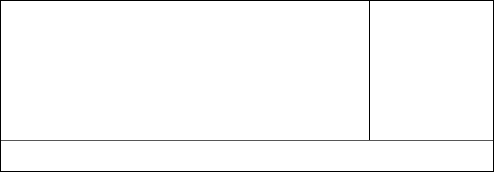
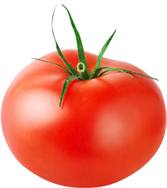
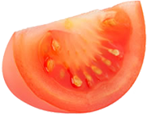
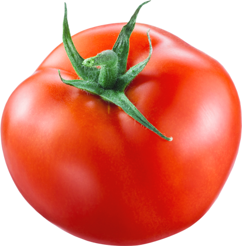
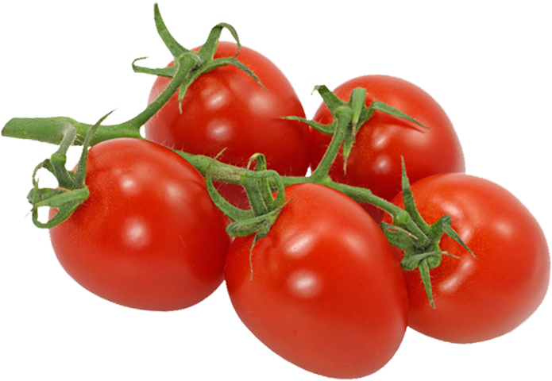
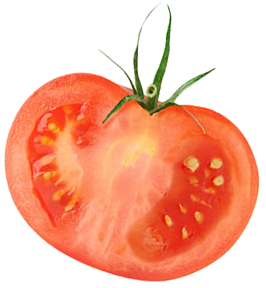

TOmatoSolanales (가지목)
Solanum lycopersicum L.
Calories
Water
Protein
18 kcal
95%
0.9 grams
Carbs
Sugar
3.9 grams
2.6 grams

11. 토마토에 대해서토마토는 가지목 가지과에 속하는 관속식물입니다. 토마토의 꽃은 5~6월에 피는데 마디 사이에 달리며, 노란색입니다. 열매는 장과 (漿果/살과 물이 많고 속에 씨가 여러 개 들어있는 열매.) 이며, 둥글고 지름 5~10cm, 7~8월에 붉은색으로 익습니다. 토마토는 밭에서 재배하는 한해살이풀로 우리말로 '일년감'이라고도 하고, 또는 '도마도, 땅감', 한자명으로는 '남만시'라고 불립니다. 우리나라에는 17세기 중국에서 도입되었으며, 1900년대 초부터 본격적으로 재배가 시작되었습니다. 남아메리카 페루 원산으로, 현재는 우리나라 전역 및 전 세계에서 토마토를 재배하고 있습니다.

